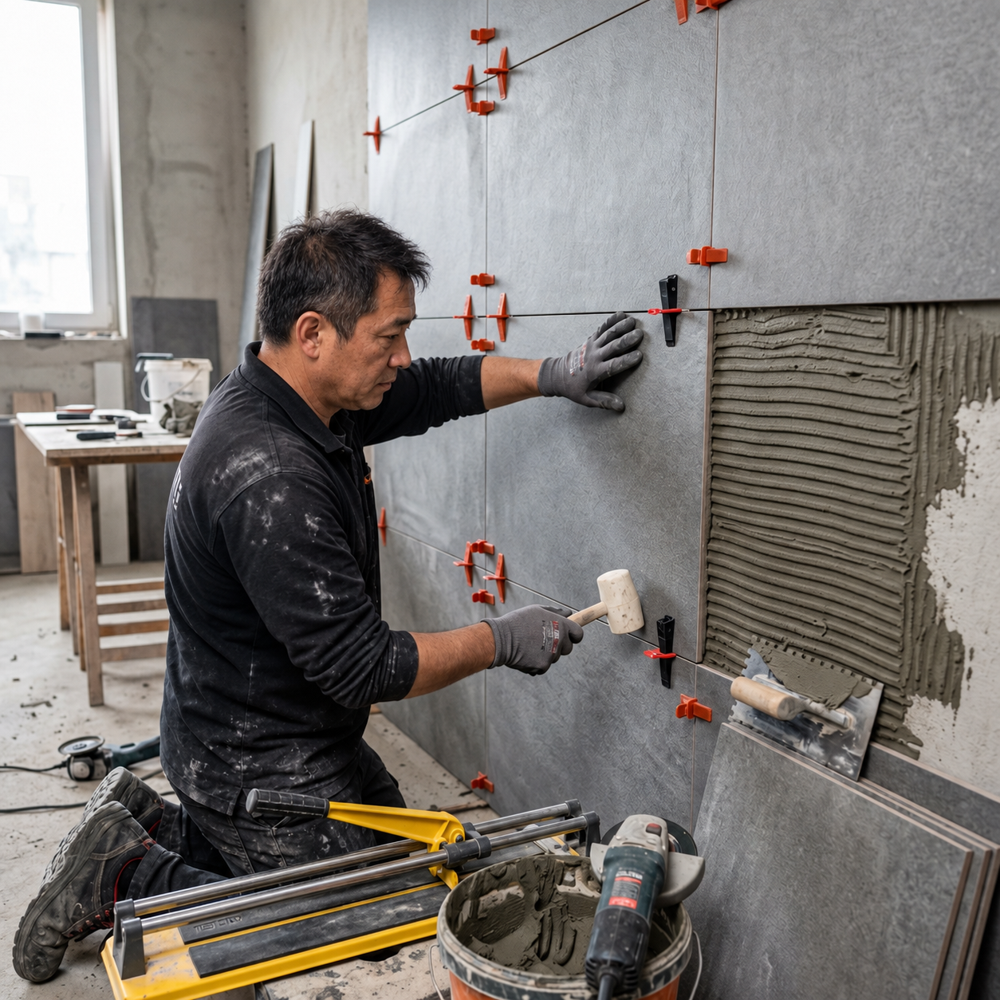

圍牆砌磚
庭院或戶外空間需要新增圍牆，可單獨委託砌磚。請說明位置、用途、約略長度與高度，並提供地面及周邊環境的照片；若現場已有牆體，也請一起拍下。
有砌磚需求，不必連同整體翻修。豈樂承接圍牆、室內磚牆隔間、新增磚牆及擋土牆工程；先提供施工地點、現況照片與約略尺寸，讓我們了解用途，再討論做法與費用。
四類工項皆可獨立承接。請提供施工地點，洽詢確認服務範圍。施工方式、材料與費用依現場條件討論；最低工程規模請洽詢。
先說施工地點、用途與約略尺寸。照片可在 LINE 對話中提供，不清楚的部分也可以先註明。
庭院或戶外空間需要新增圍牆，可單獨委託砌磚。請說明位置、用途、約略長度與高度，並提供地面及周邊環境的照片；若現場已有牆體，也請一起拍下。
調整房間或室內空間的分隔，可單獨委託磚牆隔間。請說明預計隔在哪裡、是否需要保留門洞，並拍下預定位置與周邊空間。若另有拆除或水電需求，也可一併說明。
原有空間需要多一道磚牆，可提供用途、位置與約略尺寸，並拍下相鄰牆面、地面與上方空間。不確定要用哪種材料，可以先描述使用需求，再討論適合的做法。
擋土牆工程也可獨立委託。請說明預計施工的位置與擋土用途，提供現況、周邊環境照片及約略尺寸；若已有設計或評估資料，可一併提供，後續依現場條件討論所需評估與施工方式。
只知道要「砌一道牆」，還不足以確認費用。詢問時請先提供：
實際報價、是否需要現場勘查，以及相關費用，請於聯繫時確認；本頁不提供未經現況確認的固定價格。
我想詢問砌磚工程。 工項：圍牆／室內磚牆隔間／新增磚牆／擋土牆。 施工地點與樓層： 牆面用途與約略長度、高度： 其他搭配工程（沒有可填無）： 希望施作時間： 現況照片／已有設計或評估資料：我會在對話中補上。 請協助討論施工需求與估價，並告知最低工程規模及後續需要提供哪些資料。
LINE 官方帳號：@548mfdmm
可以。圍牆、室內磚牆隔間、新增磚牆與擋土牆皆可獨立委託，不必搭配整體翻修。請提供地點、用途、尺寸與照片；服務範圍與最低工程規模請於聯繫時洽詢。
請先提供牆面尺寸、用途與現況。材料、拆除、施工位置及收邊需求可能不同，實際報價與計價方式需要另行確認。
有，擋土牆工程可獨立承接。請明確說明擋土用途，提供位置、尺寸、現況照片與已有資料，再依個案討論所需評估、施工方式與費用。
照片可協助初步了解需求，不能取代所有現場判斷。施工方式、工期及是否需現場勘查，請在確認工程範圍後討論。
泥作是老屋與浴室翻修的重要基礎，從打壁、整平到磁磚鋪設，都需要配合整體施工順序。我們堅持使用 正廠建材，並嚴格遵守水泥養護期，不趕工、不偷料。
💰 泥作工程費用參考
泥作工程費用依坪數、工法而定，歡迎來電或透過 LINE 免費諮詢，我們將依實際需求提供透明報價。
